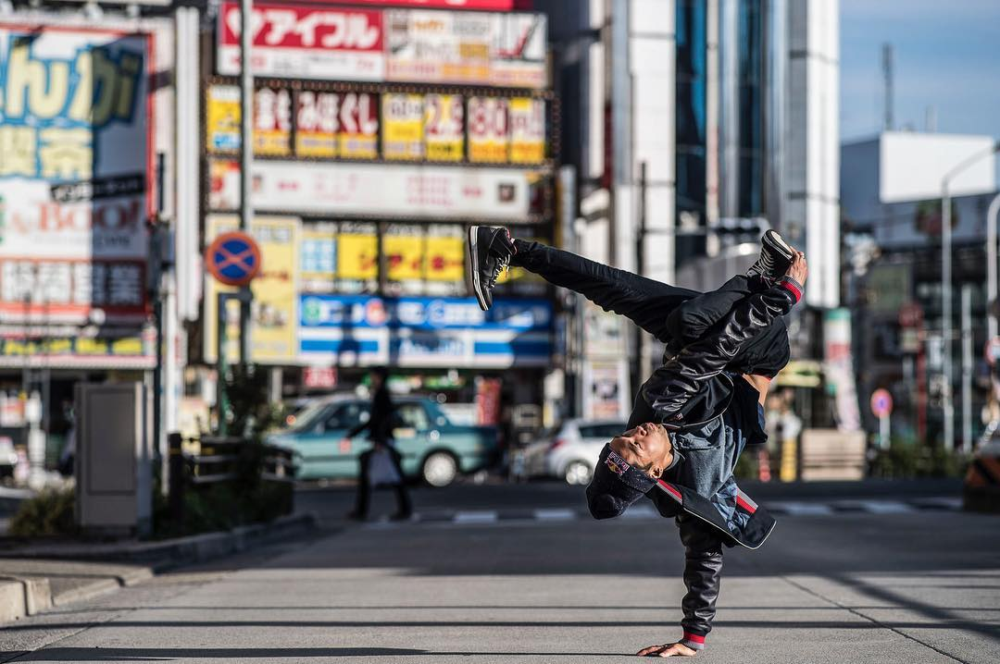

Понятие "уличные танцы" (street dance) объединяет различные танцевальные стили, исполняемые за пределами специализированных хореографических студий: на улицах, во дворах, в клубах, на дискотеках. Такое название закрепилось за танцевальным направлением именно благодаря своему уличному происхождению, датируемому 70-ми годами прошлого века в США. Молодые танцоры, владеющие необыкновенным миксом движений, выходили на улицы больших городов и устраивали танцевальные баттлы, за которыми с восхищением наблюдали случайные прохожие. Тогда такие выступления носили импровизационный характер, который постепенно перерос в отлаженные готовые номера.

Возможность свободы самовыражения, свободы движений - вот, что привлекало и привлекает сегодня исполнителей street dance. В большинстве случаев танцевальная техника уличных "плясок" не подразумевает абсолютно никаких стандартов - только полная импровизация движений исполнителя. Но и заранее подготовленная хореография также имеет место быть в современном мире танцевального искусства. На сегодняшний день танцоры street dance готовят технически отлаженные номера, с которыми выступают перед публикой и участвуют на разного рода соревнованиях.
К уличным танцам можно отнести множество стилей: из них - хип-хоп, брейк-данс и поппинг являются наиболее популярными. Хип-хоп - это своеобразная "визитная карточка" street dance, отличающаяся динамичной, ритмичной и несколько прыжковой техникой движений. Брейк-данс - "великий король" уличных танцев, властвующий во многих странах мира. Поппинг - "электронный заряд" street dance, особенный танец, имеющий характерную манеру исполнения.